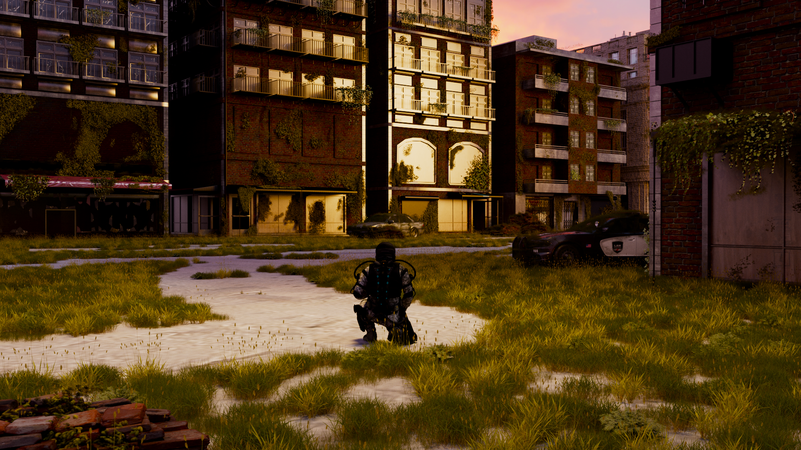
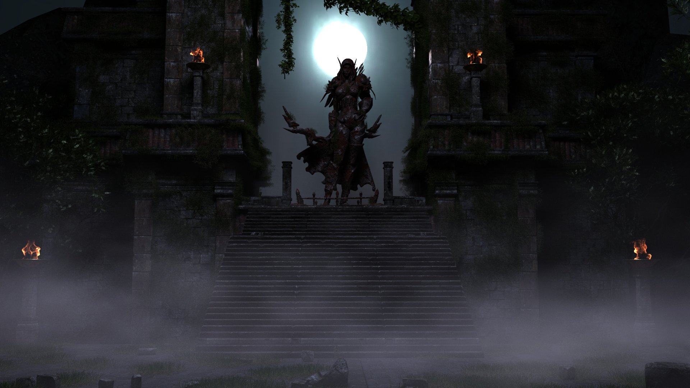
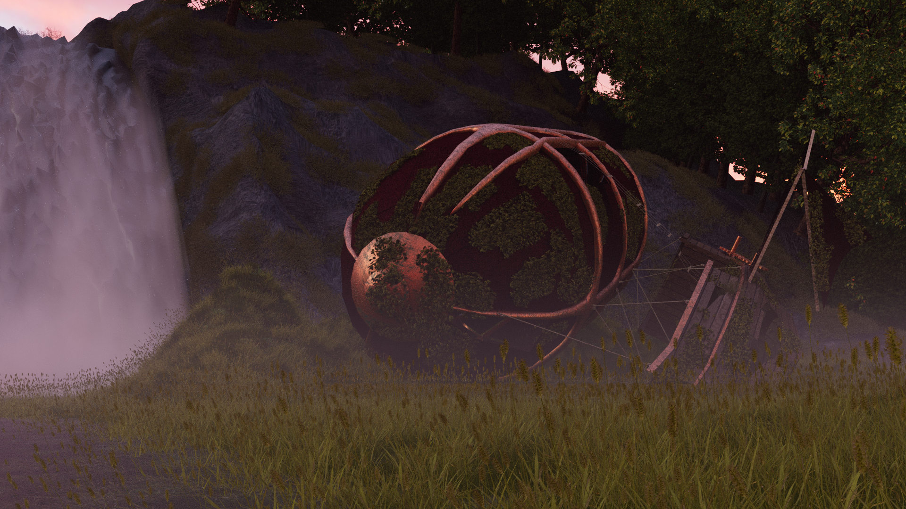
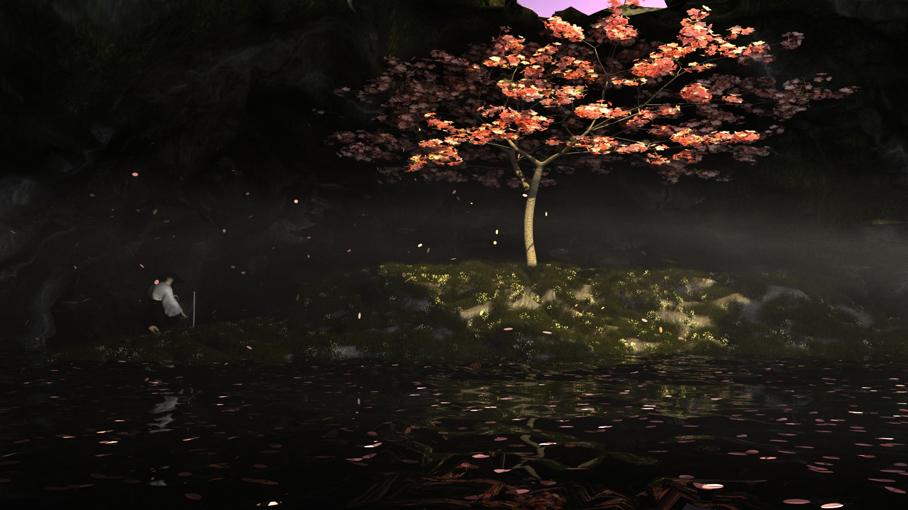
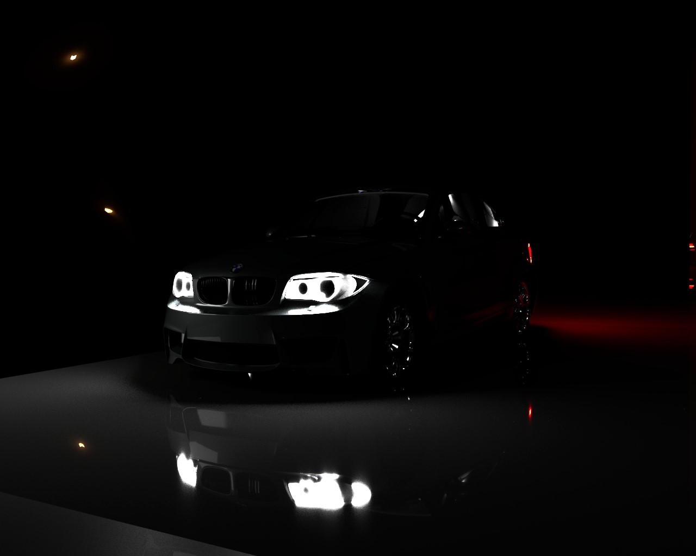
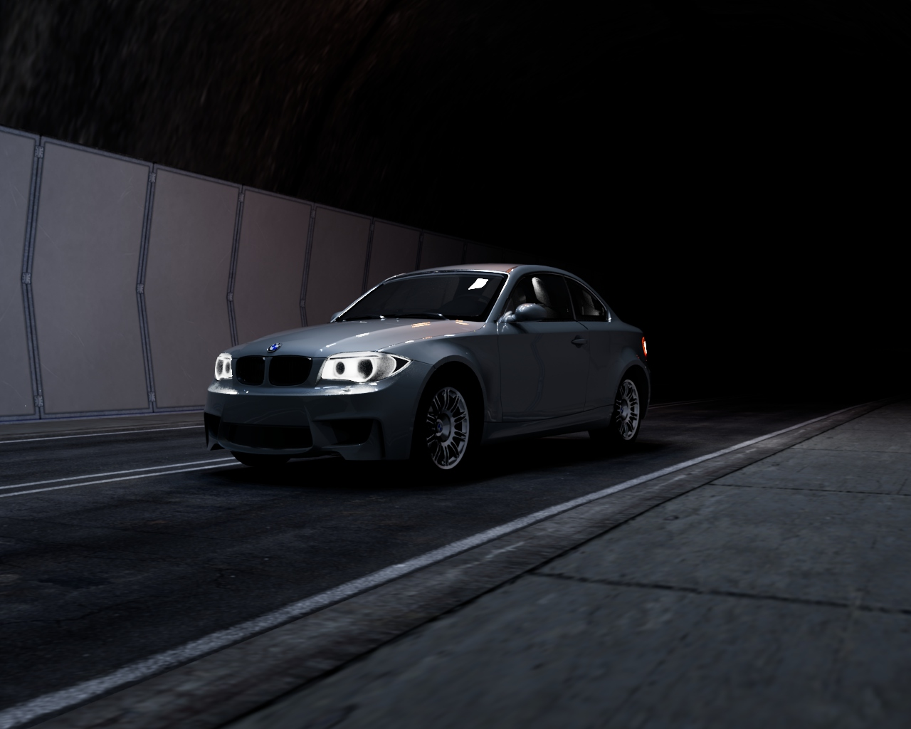

Über mich

Hallo!
Mein Name ist Wiebke Schaal, zur Zeit bin ich Studentin an der Technischen Hochschule Mittelhessen und bin dabei meinen Bachelor in Medieninformatik mit dem Schwerpunkt Medienproduktion zu machen.
Ich habe mich schon seit ich klein war für Games, Animationen und Kunst interessiert und wusste schon damals, dass ich gerne in diese Richtung gehen möchte. Durch mein aktuelles Studium konnte ich schon in viele Bereiche der 3D Art rein schauen und meine Fähigkeiten erweitern. Dabei habe ich unter anderem Erfahrungen in 3D-Modellierung, UV-Mapping, Shading, Rigging, Animation, Lighting und Motion Design gesammelt.
Für meine Projekte habe ich unter anderem schon mit Autodesk Maya, Autodesk Mudbox, Blender, Unreal Engine, Unity, Terragen, Golaem, V-Ray und Clip Studio Paint gearbeitet.
Meine 3D Arbeiten

Lost City
Lost Temple
Airship
Cave
BMW Night
BMW Tunnel